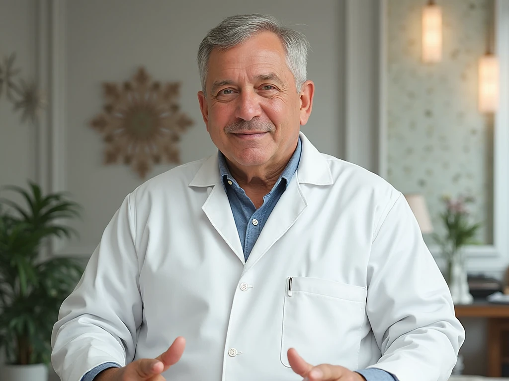

+38(068) 79 72 782
+38(068) 79 72 782Виведення з запою вдома Київ
Швидко Безпечно Анонімно


Безкоштовна консультація, працюємо цілодобово 24/7
Швидко Безпечно Анонімно
Тривалий запій — це не просто тяжке похмілля, а критичний стан організму, який потребує негайного професійного втручання. Коли людина знаходиться в цьому порочному колі, її тіло і психіка зазнають колосального навантаження. Організм зневоднений, виснажені запаси вітамінів і мінералів, нервова система перебуває на межі. Спроби самостійно впоратися із запоєм можуть призвести до серйозних ускладнень, включаючи серцеву недостатність, інфаркт, інсульт або «білу гарячку» (алкогольний делірій), яка є загрозливим для життя станом.
Саме тому виведення із запою на дому в Києві — це безпечний і ефективний спосіб перервати це порочне коло та розпочати шлях до одужання. Наш спеціаліст приїжджає до вас із усім необхідним обладнанням і медикаментами, щоб провести повноцінну процедуру в комфортних і, що вкрай важливо, анонімних умовах. Лікар негайно проводить експрес-діагностику стану пацієнта та приступає до основної частини процедури — встановлення спеціальної крапельниці від алкоголю.
Багато людей, зіткнувшись із проблемою алкогольної залежності, відчувають величезний психологічний бар’єр: вони бояться розголосу, осуду та втрати репутації. Страх за свій соціальний статус або кар’єру часто заважає зробити найважливіший крок — звернутися по допомогу. Саме тому анонімне виведення із запою на дому є не просто зручністю, а життєвою необхідністю.
Ми розуміємо, наскільки важлива конфіденційність у такій ситуації. Наш лікар приїжджає на непомітному автомобілі, без жодних упізнавальних знаків клініки. Усі медичні процедури проводяться максимально дискретно, а вся інформація про ваше лікування залишається суворо конфіденційною і не підлягає розголошенню. Це дозволяє отримати кваліфіковану допомогу в комфортній і довірчій обстановці, не хвилюючись за свою репутацію чи соціальний статус.
Така атмосфера безпеки й поваги до особистого життя пацієнта створює ідеальні умови для початку лікування. Усунувши страх перед осудом, ми допомагаємо людині зосередитися на головному — своєму одужанні. Довіра й спокій — це перший крок до успішного позбавлення від залежності.
Коли людина перебуває у стані запою, кожна хвилина на рахунку. Це не просто дискомфорт, а критичний стан, за якого організм зазнає найсильнішого отруєння. Зволікання може призвести до серйозних ускладнень, включаючи серцевий напад, інсульт або розвиток «білої гарячки». Виклик нарколога на дім — це швидкий і зручний спосіб отримати професійну допомогу, яка може врятувати життя.
Наш лікар приїде до вас у найкоротші терміни, щоб негайно розпочати стабілізацію стану. Він прибуває з усім необхідним обладнанням і медикаментами для повноцінної процедури. На місці спеціаліст проведе ретельний огляд, виміряє тиск, пульс, оцінить загальний стан і лише після цього приступить до надання першої допомоги. Ключовим етапом є встановлення крапельниці від алкоголю, яка миттєво починає очищати кров від токсинів, відновлювати водно-сольовий баланс і насичувати організм життєво важливими вітамінами та мінералами.
Такий підхід дозволяє уникнути стресу, пов’язаного з поїздкою до клініки, і отримати допомогу в звичній і комфортній обстановці. Анонімність і приватність — це не просто слова, а важливий фактор для успішного одужання, адже коли пацієнт почувається в безпеці, він більш відкритий до лікування і готовий зробити наступний, рішучий крок.
Вартість послуги виведення із запою на дому в Києві починається від 2700 грн.
| UmbrellaPlus Київ | Працюємо без вихідних | Цена |
|---|---|
| Екстрений виклик нарколога | Від 2500 грн |
| Виведення з запою | Від 2500 грн |
| Виведення з запою вдома | Від 2700 грн |
| Крапельниця від алкоголю | Від 2500 грн |
| Крапельниця від алкоголю вдома | Від 2700 грн |
Основним інструментом для виведення із запою є крапельниця від алкоголю. Це не просто швидкий, а найефективніший і науково обґрунтований метод детоксикації організму. Препарати, що вводяться внутрішньовенно, миттєво потрапляють у кровотік, оминаючи шлунково-кишковий тракт, що забезпечує негайний результат і швидке полегшення. Склад крапельниці завжди підбирається індивідуально, але його мета — це комплексне відновлення всіх систем організму, що постраждали від алкогольної інтоксикації.
У результаті, крапельниця від алкоголю — це не просто набір препаратів. Це ретельно вивірений комплекс, який діє на всі постраждалі системи організму, забезпечуючи швидке та безпечне повернення до нормального життя.
Коли ситуація стає критичною, коли кожна година запою загрожує життю та здоров’ю, необхідний терміновий вивід із запою на дому. Це не просто міра комфорту, а життєва необхідність, адже зволікання може призвести до тяжких наслідків: «білої гарячки» (алкогольного делірію), інсульту, інфаркту чи зупинки серця.
Процедура прокапатися від алкоголю на дому дозволяє швидко й ефективно зняти інтоксикацію та запобігти розвитку небезпечних для життя станів. Наш лікар готовий виїхати до вас у будь-який час доби, тому що ми розуміємо: у невідкладній наркологічній допомозі кожна хвилина на рахунку. Прибувши на виклик, спеціаліст негайно проводить експрес-огляд, щоб оцінити стан пацієнта, і приступає до встановлення крапельниці.
Саме крапельниця є основним інструментом, який миттєво починає очищати кров від токсинів. Вона не лише відновлює сили й знімає виснажливі симптоми ломки, але й забезпечує пацієнту безпеку у звичній обстановці, що знижує рівень стресу. Це дозволяє отримати професійну, невідкладну допомогу анонімно і без зайвих очей, створюючи ідеальні умови для першого кроку до одужання.
Багато людей, зіштовхнувшись із проблемою алкогольної залежності, намагаються впоратися із запоєм самостійно, використовуючи народні методи або безрецептурні препарати. Проте це не лише малоефективно, але й украй небезпечно.
Тільки професійний лікар-нарколог може правильно оцінити стан пацієнта, провести повноцінний огляд і призначити безпечне та ефективне лікування. Він використовує медикаменти, які не лише знімають виснажливі симптоми, але й підтримують роботу внутрішніх органів, запобігаючи небезпечним ускладненням. Не ризикуйте своїм життям і здоров’ям — довіртеся спеціалістам.
Обираючи послугу виведення із запою на дому від UmbrellaPlus, ви робите не просто вибір на користь процедури, а обираєте перший, вирішальний крок до нового, здорового життя. Ми розуміємо, що звернення по допомогу вимагає мужності та довіри, тому робимо все можливе, щоб забезпечити максимально комфортні й безпечні умови для наших клієнтів. Чому варто зробити цей крок зараз?
Не відкладайте своє одужання. Кожен день, проведений у запої, завдає непоправної шкоди вашому організму та психіці. Вивід із запою на дому — це не лише спосіб швидко зняти інтоксикацію, але й можливість отримати кваліфіковану підтримку в момент, коли вона найбільш необхідна. Це шанс безпечно та ефективно перервати порочне коло залежності, щоб здобути сили для подальшого лікування й повернутися до повноцінного життя.
Зателефонуйте нам за номером 050-021-69-57, і ми надамо допомогу, яка дійсно рятує життя.
Анонимно

"Никакими усилиями самостоятельно я не смогла преодолеть запой, и наступала ломка, сопровождаемая повышенным давлением и пульсом. Тогда я решила обратиться за помощью в клинику. Врачи оказали мне неоценимую поддержку! Уже прошел месяц, и я не только не употребляю алкоголь, но даже не испытываю к нему желания!"
Анонимно
"Могу с уверенностью порекомендовать данный центр для тех, кто ищет помощь при выводе из запоя. Я неоднократно обращался к ним и могу сказать, что цена соответствует качеству услуг. После проведения капельницы в клинике, вся тяга к алкоголю проходит, и я чувствую себя гораздо лучше. Это действительно эффективный метод, и я благодарен клинике за их профессионализм и заботу!"
Анонимно
"Я очень благодарен за то, что вы помогли мне разобраться с моей проблемой алкоголизма и найти ее решение. Давно осознавал, что без помощи профессионалов я не справлюсь, и я не ошибся, выбрав ваш центр Амбрелла. Здесь действительно предоставляется профессиональная помощь, которая оказалась для меня реальным спасением. Огромное спасибо за вашу поддержку и заботу!"
Анонимно
"Неоднократно я пытался бросить алкоголь самостоятельно, но каждый раз уговаривал себя продолжать. Я сначала ограничивался одной бутылкой в день, потом двумя, и в итоге вновь попадал в запой. Но в итоге, я смог прекратить употребление алкоголя только после того, как обратился в центр Амбрелла и заказал у них услугу вывода из запоя. Уже не пью 3 месяца и удалось полностью восстановиться. Благодарю врача который меня вел - Алексея Валерьевича"
Анонимно
"Здравствуйте! Я хотел бы выразить свою искреннюю благодарность клинике за быстрое и профессиональное освобождение моего мужа пивного рабства! Ранее у меня уже не было никаких надежд на его выздоровление. Однако, благодаря вашим перспективным методам лечения, мы теперь идем к полному отказу от алкоголя. Вы дали нам новую надежду и оказали неоценимую помощь! Спасибо вам за все!"
Анонимно
"Я долгое время страдал от запоев и не мог справиться с этой проблемой. Однако, когда я обратился в этот центр, они быстро помогли мне вернуться на ноги, и самое главное - предоставили мне возможность не возвращаться к запоям. Уже почти полгода я не испытываю запоев! Это для меня настоящее чудо, я никогда не думал, что смогу так преодолеть свои проблемы. Большое спасибо центру Амбрелла!"
Анонимно
"Благодарю ваш центр Амбрелла за оперативное и высококачественное лечение! Женский алкоголизм - это настоящее горе, с которым невозможно справиться в одиночку. Я уже потеряла надежду, но благодаря вашей помощи, она вернулась ко мне! Отдельная благодарность врачу Станиславу Вячеславовичу, а также благодарность Богу за то, что он послал мне такое чудо как ваша центр! Спасибо вам всем!"
Анонимно
"Хочу выразить благодарность врачу Владиславу Алексеевичу за то, что вы избавили меня от этого ужаса. Я уже был в отчаянии, перепробовал множество клиник и центров, но только здесь я наконец получил настоящую помощь! Алкоголь полностью разрушил меня, и если бы не ваша помощь, я, возможно, уже не был бы жив. С вами я смог вернуть себе жизнь и буду благодарен вам всегда!"
Номер телефону:
+380 (97) 369 76 65
+380 (50) 021 69 57
Адреса головного офісу: м. Харків вул. Сумська 47
Офіс вашого міста
потрібно уточнити
Працюємо у: Одесі, Києві, Львові, Харкові, Дніпрі,
Запоріжжя
Telegram: t.me/umbrellaplus
Графік роботи: Цілодобово